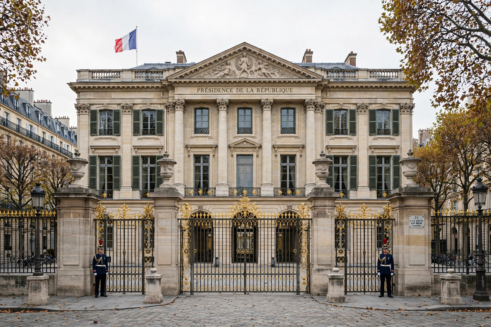

The Fifth Republic is France's current republican system of government, established by the Constitution of 4 October 1958. It was brought into being by Charles de Gaulle amid the crisis of the Algerian War, which had paralysed the parliamentary Fourth Republic.
The Fifth Republic is a semi-presidential system with a strong executive. The President of the Republic, elected directly by universal suffrage since a 1962 referendum (for a five-year term since 2000), appoints the Prime Minister, presides over the Council of Ministers, may dissolve the National Assembly, and holds extensive powers in foreign and defence policy. The government is responsible to the National Assembly, which can dismiss it by a motion of censure — a combination distinguishing the system from both pure presidentialism and pure parliamentarism.
De Gaulle was the Republic's first president, followed by Georges Pompidou, Valéry Giscard d'Estaing, François Mitterrand, Jacques Chirac, Nicolas Sarkozy, François Hollande and Emmanuel Macron. The system has accommodated alternation in power and three periods of "cohabitation", when president and parliamentary majority came from opposing camps (1986–88, 1993–95, 1997–2002).
Critics have long described the Fifth Republic as an "elective monarchy", pointing to the concentration of power in the presidency and the relative weakness of parliament — an early example of modern centralisation in a democratic state. Periodic proposals for a Sixth Republic surface in French politics, alongside defences of the 1958 settlement's stability.